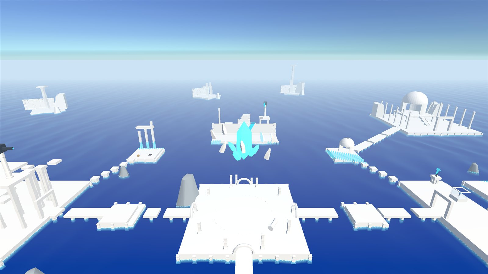
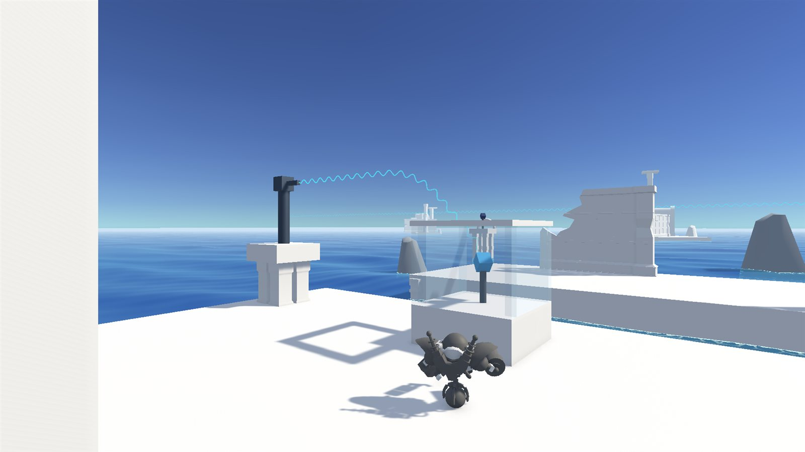
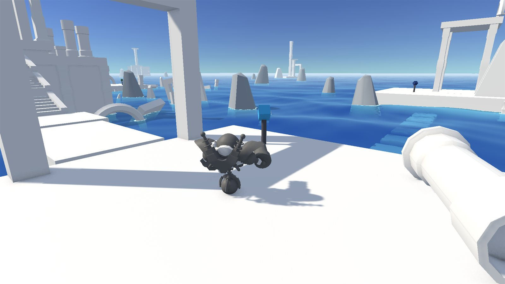
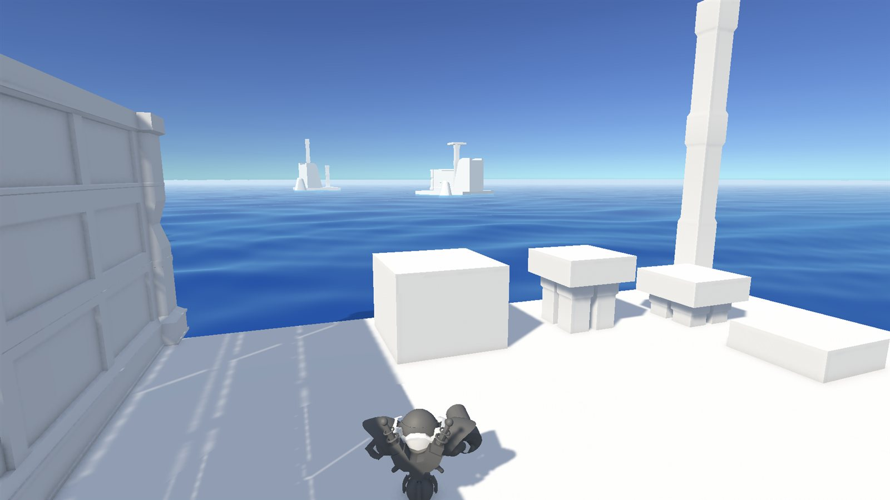
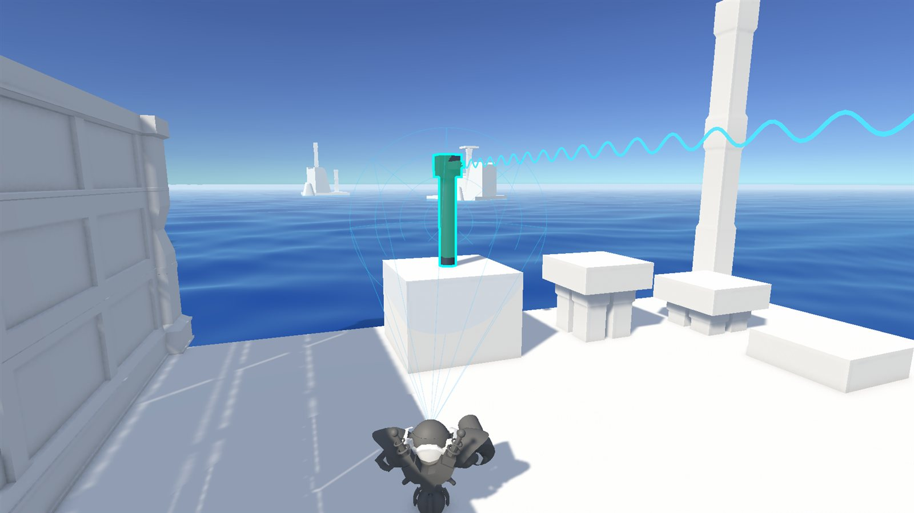
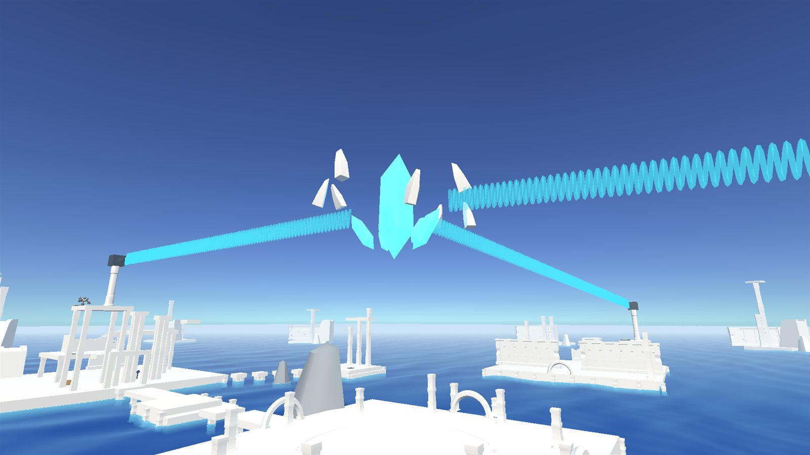
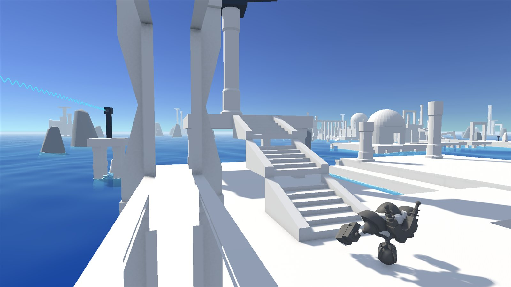
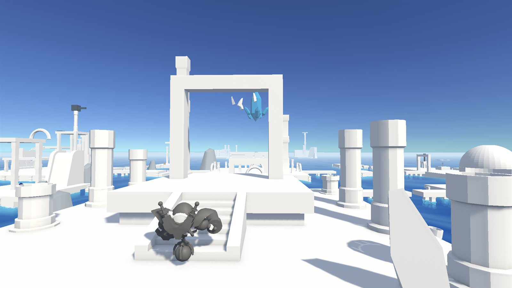
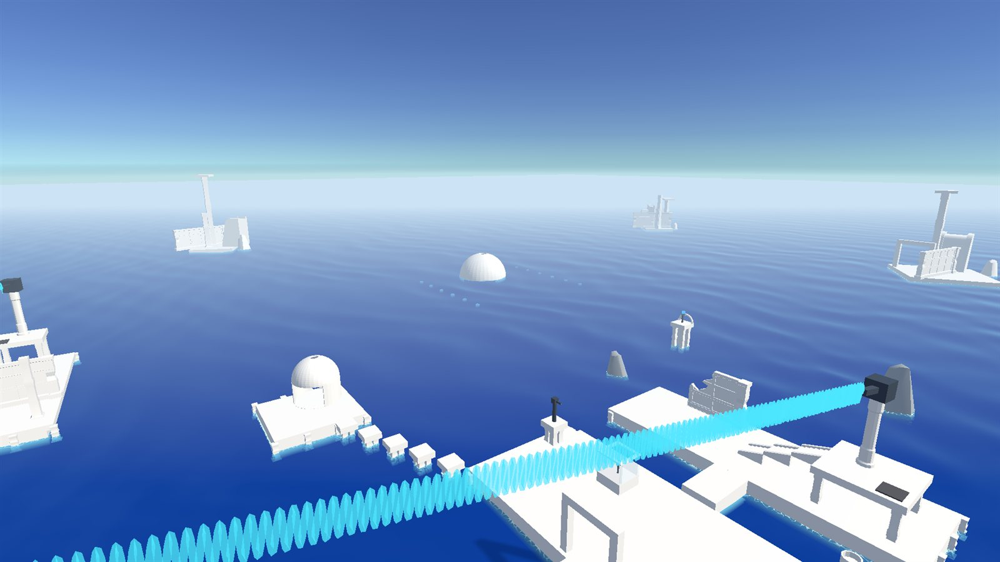
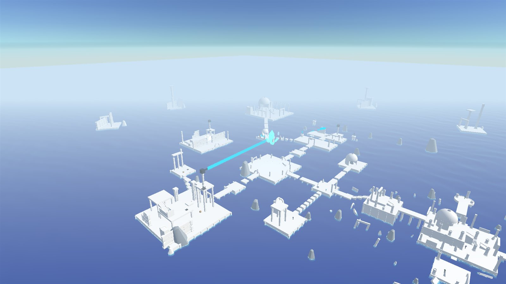

波のグラティア

海に浮かぶ遺跡で、電磁波と超音波の「波」を撃つ3Dのパズルアクションです（制作中）。念力で波を曲げ、エコーロケーションで隠れた物を見つけながら、仕掛けを動かして進みます。HAL東京の未来創造展に向けてチームで作っていて、波の仕組みとギミックのプログラム、ステージの組み立てを担当しています。
概要
| 制作期間 | 2026年9月〜 |
|---|---|
| 担当 | 波の仕組み（ビーム・扇）と見た目 物と波の情報、ギミック、Inspector の拡張 α 版と β 版のステージの組み立て |
| 開発環境 | Unity 6（URP）、C#、GitHub |
実装した機能
念力で曲げられる点と線のビーム
ビームは、一定の間隔に並べた点と、点どうしをつなぐ直線で作っています。プレイヤーが念力で点を掴んで動かすと、その点が支点になり、前後の決めた範囲がなめらかに曲がります。曲げる前の基準の線は壁の向こうまで伸ばして考えるので、支点を横へ動かせば、壁を避けて通したり、当たる先を変えたりできます。
- 曲げ方は 2 つ。支点ごとの山を足し合わせる形（支点を足したり消したりしても形が跳ばない）と、支点で向きを変えてその先は真っすぐ進む形
- 離した支点の曲がりは、手前から来た向きに対する角度で覚えるので、手前の支点を動かすと後ろも鎖のように付いてくる
- 当たった物の素材で、止まる・跳ね返る・通り抜けて先へ進むが決まる
- 種類（電磁波・超音波）・強さ・届く距離・曲げられるかは撃ち手の情報から読み、プレイヤー・タレット・敵で同じ部品を使う
- 当たり判定と見た目を別の部品に分け、見た目は波の種類の色・波長・振幅で揺れる線を流す

扇（近距離）の波
近くの物に向けて、ショットガンのように広がる波を撃てます。撃った瞬間の位置と向きで円すいの範囲を決め、範囲の中の物へ、波面が届いた順に波を渡します。押している間は 0.12 秒ごとに撃ち、壁の裏には届きません。
- 見た目は、細かい泡を輪の管に沿って回す泡の輪。輪の広がりは当たり判定の円すいに合わせ、連射すると輪が連なって円すいになる
- 泡の重ね方は、明るい背景でも見える「色を重ねる」と、暗い所で縁が光る「光を足す」から選べる

物と波の情報
波で動く物、波の跳ね返り方、隠れている物などの情報を、物に付ける小さなコンポーネントに分けて持たせています。情報は持つだけで、動かす処理は波やエコーロケーションの側が読み取って行います。
- 反応する波の種類と、動くまでに当てる時間（強いビームほど早く溜まる）
- 弱点の部位と、波の種類ごとの効き目の倍率
- 素材（金属・コンクリート・ガラスなど）。波を跳ね返すか・通すか、エコーをさえぎるかを ScriptableObject で決め、直すと同じ素材の物すべてに効く
- 隠れ方（見えない・別の見た目に化けている）と本当の姿
- 当たった物から情報を探した結果は、コライダーごとに覚えて使い回す。コンポーネントの有効・無効が変わったら、次の問い合わせの前にまとめて捨てる
エコーの範囲の中だけ見える波
ビームの見せ方を「見える範囲の中だけ」にすると、エコーロケーションの波が届いている所だけビームが見えるようにしました。当たり判定と波を渡すことは変わらないので、ふだんは見えない波を、エコーで探しながら解く仕掛けが作れます。「範囲に触れたら全体を見せる」にすると、線の一部が範囲に触れたときにビームの全体を見せ、離れてからも決めた秒数だけ見せ続けます。


ギミック
波が当たったときや、スイッチが入ったときの処理は UnityEvent でつなぎ、プログラムを書かずにシーンの上で仕掛けを組めるようにしました。
- 上に載った物の重さ（Rigidbody の Mass の合計）で入る床のスイッチ。念力で箱を運んで載せる、などに使う
- 起動すると決めた位置や向きまで動く・回る仕掛け。止めると元に戻り、往復もできる。乗った物を一緒に運ぶ足場にも使う
- 当たった波の数に応じて段階的に光る仕掛け（3 本の波で光りきるクリスタルなど）
- 海に落ちたプレイヤーや箱を、いちばん近い戻す場所へ戻す範囲


作業を楽にする道具
チームでシーンを組むときに迷わないよう、Unity のエディターを拡張しました。
- 属性を付けるだけで、Inspector の項目名と選択肢を日本語で出す
- UnityEvent の関数のメニューに、印を付けた関数だけを出す
- キーを押すと、シーンにあるすべての波の当たり判定（ビームのカプセル、扇の円すいと波面、当たった所）を半透明で出す
α 版と β 版のステージ
遺跡のモデルを使って、α 版と β 版のステージを組みました。β 版のステージでは、エコーで隠れた床やスイッチを見つける場所、波を曲げて届かないスイッチに通す場所を回って、中央のクリスタルに 3 本の波を集めると、海に沈んでいた道がせり上がります。
スクリーンショット


